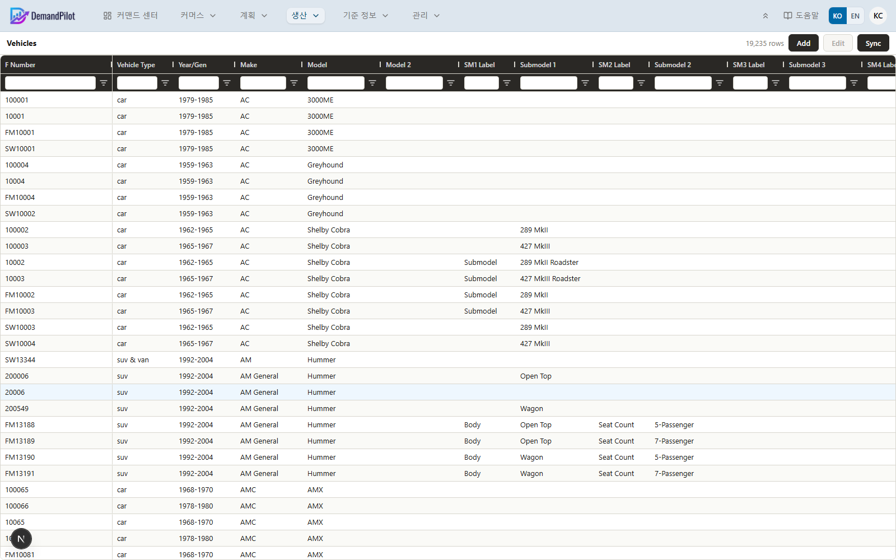
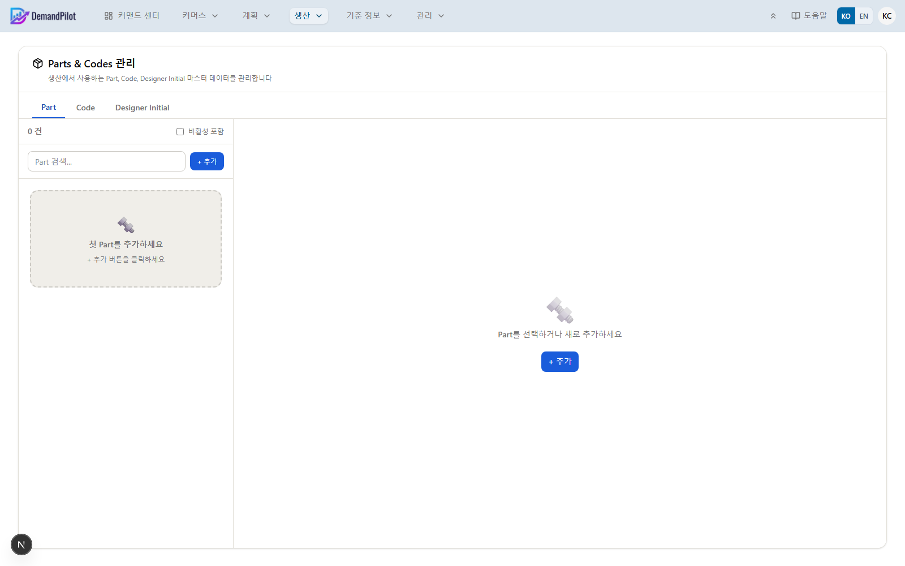
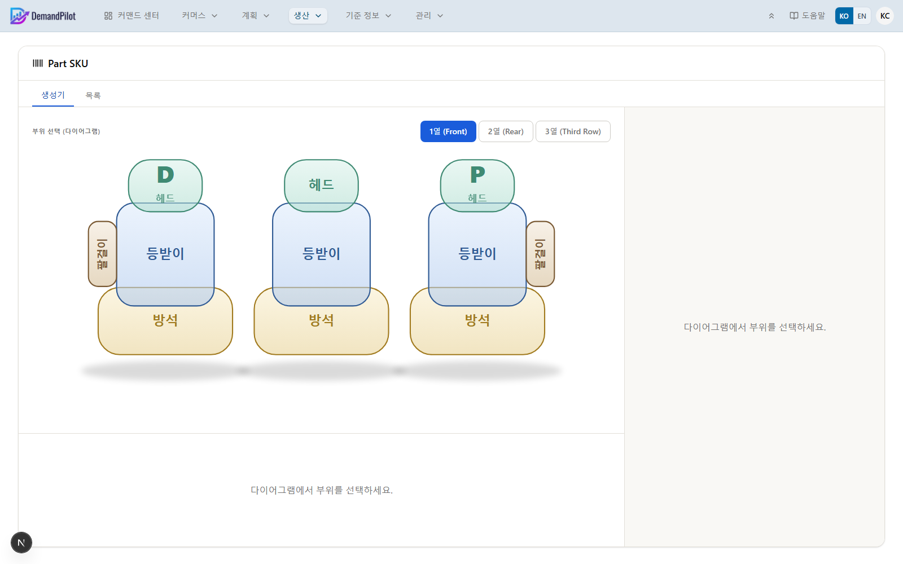

저장을 누르면 현재 D/P 선택값 기준으로 Driver/Passenger 값이 한 번 더 정리된 뒤 저장되므로, 저장된 데이터는 항상 D/P 설정과 일치합니다. 그리드에서는 D/P 값이 색깔 라벨(동일=초록, Driver 기준 대칭=파랑, Passenger 기준 대칭=주황)로 표시됩니다.
"Package" 컬럼은 입력창이 열려 있는 동안 실시간으로 자동 계산되는 요약 텍스트입니다(직접 수정도 가능). 규칙은 다음과 같습니다.
완성된 문구들은 쉼표로 이어 붙여 하나의 문자열로 저장됩니다.

🚗
Vehicles 그리드
'" alt="Vehicles 그리드">
▲ F Number · Vehicle Type · Make · Model · Submodel 1~6 · Updated · Add/Edit/Sync
| 컬럼 | 의미 |
|---|
| F Number | 차량 고유 식별자, 그리드 왼쪽에 고정 (등록 후 수정 불가) |
| Vehicle Type | 차량 유형 (자유 입력) |
| Year/Generation | 연식·세대 정보 |
| Make / Model / Model 2 | 제조사 · 모델명 |
| Submodel 1~6 | 트림 등 세부 구분 (라벨+값 쌍, 최대 6개, 모두 선택 입력) |
| Updated | 마지막 수정 일시 |
모든 컬럼에 텍스트 필터와 정렬이 있습니다(별도 내보내기 버튼은 없음).
추가 / 수정
필수 입력값은 F Number · Make · Model 세 가지뿐이며, 나머지(Vehicle Type, Year/Generation, Model 2, Submodel 1~6)는 모두 선택 입력입니다. 수정 화면에서는 F Number가 읽기전용으로 고정되어 변경할 수 없습니다. 행을 하나 선택해야 "수정" 버튼이 활성화됩니다.
Sync (동기화)
Sync 버튼을 누르면 외부 차량 데이터 소스에서 최신 목록을 가져와 F Number 기준 전체 upsert + 소스에서 사라진 F Number는 삭제하는 방식으로 동기화합니다.
⚠️
Sync 완료 메시지의 건수(업데이트/삭제 건수)는 현재 화면에 정확히 표시되지 않을 수 있습니다. 실제 반영은 정상적으로 이루어지지만, 결과 팝업의 숫자를 그대로 신뢰하지 말고 필요하면 목록을 새로고침해 직접 확인하세요.
또한 외부 소스에서 비어있는(0건) 데이터를 받아오면, "소스에 없는 항목은 삭제"라는 규칙 때문에 기존 차량 데이터 전체가 삭제될 수 있습니다. Sync 실행 전 외부 소스 상태를 먼저 확인하는 습관을 들이세요.
개별 행 삭제 버튼은 없습니다. 특정 차량을 지우려면 원천 데이터에서 제거한 뒤 Sync를 실행해야 합니다.
여기 등록된 Make/Model은 Part SKU Generator의 차종 드롭다운에 그대로 나타납니다.

🔤
Parts & Codes 탭 화면
'" alt="Parts & Codes 화면">
▲ Part / Code / Designer Initial 탭 — 검색 + 목록/상세
이 화면 자체는 업무 트랜잭션을 만들지 않습니다. Part SKU Generator가 SKU를 조합할 때 참조하는 "허용 값 사전"입니다. 세 탭 모두 하나의 권한 섹션(parts-codes)을 공유합니다.
| 탭 | 내용 |
|---|
| Part | 표준 시트커버 Part 카탈로그 기반의 전용 등록 화면 — 아래 Part 등록 섹션에서 자세히 설명합니다. |
| Code | 필드: Code(예: CODE-001) + Description. 저장 시 Code 값이 자동으로 대문자로 정규화됩니다. |
| Designer Initial | 필드: Initial(예: TK) + Designer Name(담당 디자이너 이름). Initial은 저장 시 자동으로 대문자로 정규화됩니다. |
Code / Designer Initial 공통 사용법
1
검색 → 목록 → 상세
왼쪽 검색창으로 찾고, 목록에서 항목을 클릭하면 오른쪽에 상세(기본 정보 + 상태)가 열립니다. + 추가로 신규 등록.
2
추가·수정 시 활성(Active) 여부 설정
비활성 처리된 항목은 Part SKU Generator의 선택 목록에 더 이상 나타나지 않습니다.
3
"비활성 포함" 체크박스로 과거 항목도 조회
삭제는 실제 삭제가 아니라 비활성 처리이므로 언제든 다시 활성화할 수 있습니다.
| 상태 | 의미 |
|---|
| 활성 | Part SKU Generator 드롭다운에 노출됨 |
| 비활성 | 드롭다운에서 숨겨지지만 데이터는 보존됨 |
표준 시트커버 Part 카탈로그는 앱에 내장된 고정 참조 목록으로, 총 57개의 표준 부품 분류가 Row(좌석 위치: Front/Rear/Third Row) · Position(Driver/Passenger/Middle/Universal) · Category(Headrest/Top Body/Bottom/Arm/Console/Back Storage/Sub-part) 조합으로 정의되어 있습니다. 이 카탈로그 자체는 관리 화면에서 추가/수정할 수 없는 앱 내장 데이터입니다.
신규 Part 등록 절차
1
+ 추가 클릭
"새 Part" 입력 폼이 열립니다.
2
카탈로그에서 분류 선택
검색 가능한 드롭다운에서 57개 표준 분류 중 하나를 고르면, Row/Position/Category가 자동으로 채워지고 읽기전용으로 표시됩니다.
3
실제 Part Name 자유 입력
카탈로그 분류명을 그대로 쓸 필요는 없습니다 — 여기에 입력하는 이름이 실제로 저장되는 고유 키(Part Name)가 됩니다.
4
Description(선택) · Active 여부 설정 후 저장
저장하면 이 Part가 즉시 Part SKU Generator의 Part 목록/부위 필터에 반영됩니다.
🧩
카탈로그에서 고른 분류는 재사용 가능한 "태그"일 뿐 고유값이 아닙니다 — 여러 Part가 같은 Row/Position/Category 분류를 공유할 수 있습니다. 한 번에 하나씩만 등록하며, 일괄 등록 기능은 없습니다.
⚠️
Row/Position/Category는 등록 후에는 수정할 수 없습니다. 수정 화면에서는 Description과 Active 여부만 바꿀 수 있으니, 분류를 잘못 골랐다면 새로 등록하고 기존 것을 비활성 처리하세요. Part Name은 여전히 고유해야 하며, 중복 시 오류가 표시됩니다.
이렇게 등록된 Part 데이터는 Code/Designer Initial과 마찬가지로 비활성 포함 체크박스로 지난 항목을 조회할 수 있고, Part SKU Generator의 다이어그램 부위 필터(Row/Position/Category 기준 매칭)와 Part 선택 목록에 그대로 사용됩니다.

🏷️
Part SKU Generator — 좌석 다이어그램
'" alt="Part SKU Generator 화면">
▲ "생성기" 탭 — 1열(Front)/2열(Rear)/3열(Third Row) 좌석 다이어그램에서 부위를 클릭
화면 상단에 생성기 / 목록 탭이 있습니다. 기본으로 열리는 "생성기" 탭은 좌석 다이어그램을 클릭해 부품을 찾는 방식으로 동작합니다.
SKU 조합 규칙
{Part Name}-{Make Abbr}-{Model Abbr}-{Code}-{Initial}[-{Side}]
Side(좌우 구분)가 정확히 Universal일 때만 SKU 마지막 구분 세그먼트가 생략됩니다. Side 선택지는 Driver / Passenger / Mirror Driver / Mirror Passenger / Universal 다섯 가지입니다.
1단계 — 다이어그램에서 부위를 클릭해 Part 후보를 좁히기
부위(zone) 클릭은 필터일 뿐이며, 실제 SKU에 들어가는 부품명은 2단계에서 목록 중 고른 Part입니다. 다시 클릭하면 선택이 해제됩니다. 좌석 열(row)마다 클릭 가능한 부위 수가 다릅니다.
| 좌석 열 | 부위(zone) 구성 |
|---|
| 1열 (Front) | Driver·Passenger 각각 Headrest / Top Body(등받이) / Bottom(방석) / Arm(팔걸이) 4개씩, Middle은 Headrest / Top Body / Bottom 3개(Arm 없음) — 총 11개 부위. Console·Back Storage·Sub-part 없음. |
| 2열 (Rear) / 3열 (Third Row) | Driver·Passenger 각각 위 4개에 Back Storage(수납) / Sub-part(기타부품)가 추가되어 6개씩, Middle은 Headrest / Top Body / Bottom / Console 4개 — 각 열 총 16개 부위. |
부위별로 등록된 Part가 없으면 다이어그램에서 흐리게(반투명) 표시되고, 있으면 개수가 함께 보입니다. Position이 Universal로 등록된 Part는 Driver/Passenger 어느 부위를 클릭해도 후보에 포함됩니다(단 Middle 부위에는 포함되지 않음).
2단계 — 목록에서 실제 Part 클릭
필터링된 목록에서 실제 사용할 Part를 클릭하면 그 이름이 SKU의 부품명으로 확정됩니다.
3단계 — 우측 세션 설정
입력 순서는 Make(드롭다운) → Make Abbr(자유 입력) → Model(드롭다운, Make 선택 후 활성화) → Model Abbr(자유 입력) → Initial(드롭다운)입니다. 5개 값이 모두 채워져야 "세션 준비 완료" 상태가 되며, 그래야 Code·Side 입력이 활성화됩니다.
4단계 — Code / Side 선택 → 미리보기 → "+ 생성"
세션이 준비되고 Part·Code·Side가 모두 채워지면 SKU 미리보기가 실시간으로 나타납니다. + 생성을 누르면:
- Part·Code·Side만 초기화되고, Make/Make Abbr/Model/Model Abbr/Initial 세션은 그대로 유지됩니다.
- 다이어그램에서 선택했던 부위(zone) 필터도 그대로 유지됩니다 — 확정된 Part 선택만 비워집니다.
- 화면은 자동으로 "목록" 탭으로 전환되고 방금 만든 SKU가 선택된 상태로 표시됩니다.
세션 전체(Make/Model/Initial 포함)를 지우고 싶다면 별도의 초기화 / Reset 링크를 사용하세요.
⚠️
Make Abbr / Model Abbr는 사전 정의된 목록이 아니라 자유 입력입니다. 같은 차종에 다른 약어(예: "HY" vs "Hyundai")를 입력하면 SKU 표기가 일관되지 않으니, 팀 내에서 약어 표기를 미리 통일해두는 것이 좋습니다.
🧩
다이어그램의 부위 이름(헤드레스트·등받이·방석·팔걸이·콘솔·수납·기타부품)은 시트 커버 부품 화면과 같은 분류 체계를 재사용한 것일 뿐, 실제 데이터는 서로 다른 곳(이 화면은 Parts & Codes의 Part 데이터, 시트 커버 부품은 별도 사이즈별 마스터)에 저장됩니다. 이름이 비슷하다고 같은 데이터는 아닙니다.
🔁
완전히 동일한 SKU 문자열로 다시 저장을 시도하면 "Part SKU already exists: {SKU}" 오류가 팝업(alert)으로 표시됩니다. 세션 값이 비어 있는 등 입력 누락도 같은 방식의 팝업으로 안내되며, 권한이 없어 저장이 막힌 경우에만 화면 우측 하단 토스트(toast) 메시지로 다르게 안내됩니다.
- 좌측 목록 검색창은 SKU · Part명 · Make · Make Abbr · Model · Model Abbr · Code · Initial · Side · 작성자 · 좌석 위치까지 폭넓게 매칭합니다.
- 비활성 포함 체크박스를 켜야 비활성(삭제) 처리된 SKU가 목록에 나타납니다 — 기본값은 숨김입니다.
- 우측 상세에는 구성 요소(좌석 위치/Part/Make/Model/Code/Initial/Side/생성자) breakdown이 표시됩니다.
- SKU 삭제 버튼은 비활성 처리(soft delete)이며, 비활성 SKU에는 대신 활성화 버튼이 나타나 되돌릴 수 있습니다(status 권한 필요).
체크리스트
SKU 상세 화면 하단에 진행 상황을 기록하는 체크리스트 기능이 있습니다.
- 항목 추가 및 상태 변경(Pending → In Progress → Done)에는
edit 권한이 필요합니다.
- 체크리스트 항목의 삭제는 완전 삭제(하드 삭제)입니다 — SKU 자체의 삭제(비활성 처리, 복구 가능)와 달리 한 번 지우면 되돌릴 수 없습니다.
⚠️
SKU 삭제와 체크리스트 항목 삭제는 복구 가능 여부가 다릅니다. SKU는 "비활성 포함"으로 다시 찾아 활성화할 수 있지만, 체크리스트 항목은 삭제 즉시 영구히 사라집니다.